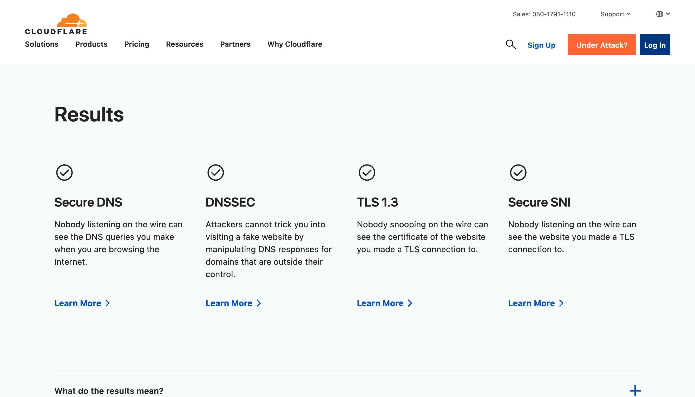

6.1. Firefoxのセキュリティ設定#
6.1.1. セキュリティアドオン#
6.1.2. 安全なインターネット接続#
VPNの使用
Cloudfareの有効化
ECHの有効化
WebRTCの無効化
VPN#
仮想プライベートネットワーク（VPN）は、IPアドレスの隠蔽、インターネットトラフィックの暗号化、および地域制限のあるコンテンツへのアクセスなどの機能を提供します。
Cloudflareを使用したDoH（DNS-over-HTTPS）の有効化#
Firefoxを開き、
about:preferences#generalに移動します。ページを下にスクロールし、
ネットワーク設定の設定をクリックします。DNS over HTTPSを有効にするを選択し、プロバイダとしてCloudflareを選択します。OKをクリックしてタブを閉じます。
または
Firefoxを開き、
about:configに移動します。network.trrを検索します。network.trr.modeを2または3に設定します（2: TRR優先、DNSにフォールバック、3: TRRのみ）。network.trr.uriをhttps://mozilla.cloudflare-dns.com/dns-queryに設定します。
ECH（暗号化されたクライアントハロー）の有効化#
Firefoxを開き、
about:configに移動します。network.dnsを検索します。network.dns.echconfig.enabledをtrueに設定します。network.dns.http3_echconfig.enabledをtrueに設定します。
WebRTCの無効化#
Caution
WebRTC 👉 WebRTCはWebリアルタイムコミュニケーションの略です。これは、ブラウザ間でプラグインや外部ソフトウェアなしに直接インターネット上でオーディオやビデオ通信を可能にする技術です。ビデオ会議などのリアルタイム通信に役立つ一方、IPアドレスの漏洩の可能性があり、プライバシー上の懸念があります。ブラウザでのWebRTCの無効化は、IPアドレスの漏洩を防ぐのに役立ちます。
WebRTCの無効化:
Firefoxを開き、
about:configに移動します。media.peerconnection.enabledを検索し、falseに設定します。
WebRTC Leak Shield：この拡張機能を使用すると、上記の設定を簡単に切り替えることができます。
6.1.3. テスト#
Cloudflare Browser Checkをパスすると、次のように表示されます：
{kind=link}